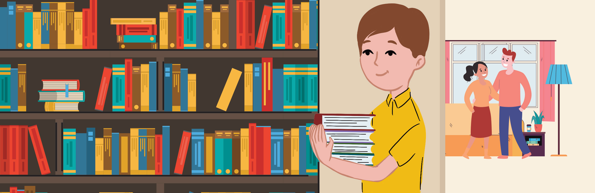

Lidhjet dhe bashkëpunimi me të tjerët
Së bashku ia dalim
Situata 1.
Ishin ditët e fundit të gushtit, kur Lisi po rregullonte dhomën e tij të gjumit para fillimit të vitit shkollor. Do ta fillonte klasën e katërt dhe kjo e bënte më përgjegjës ndaj gjërave të tij. Lisi është idhtar i ripërdorimit dhe i riciklimit dhe ai çdo vit shikon se çfarë i ka mbetur nga viti i kaluar shkollor për t’i përdorur në vitin e ardhshëm. Mirëpo, diçka që nuk i duhej më, por që kishin shumë vlerë për të, ishin librat e tij të parë.
Mendoi t’i vendoste diku në shtëpi për t’i ruajtur, por e dinte që kështu nuk bënte mirë për askënd. Kur bisedoi me prindërit për këtë çështje, ata i dhanë një ide të shkëlqyeshme.
- Pse nuk mbledh libra edhe nga shokët e klasës dhe të krijoni bibliotekën e klasës? - ishte ideja e përbashkët e prindërve.
Lisi u lumturua shumë nga kjo ide. E mendonte sa mirë do të bëhej kur të gjithë fëmijët e klasës do të mblidhnin librat e tyre dhe t’i shkëmbenin me njëri-tjetrin.
